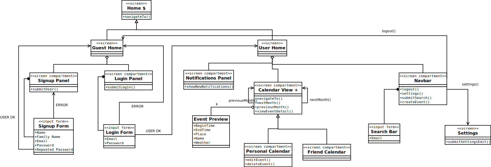
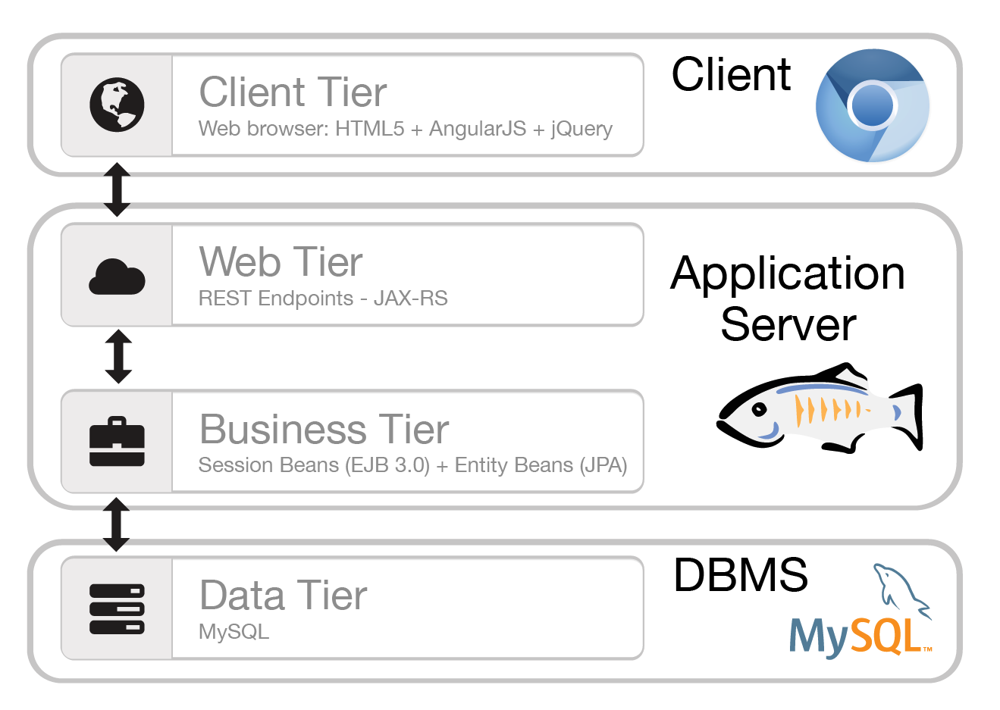
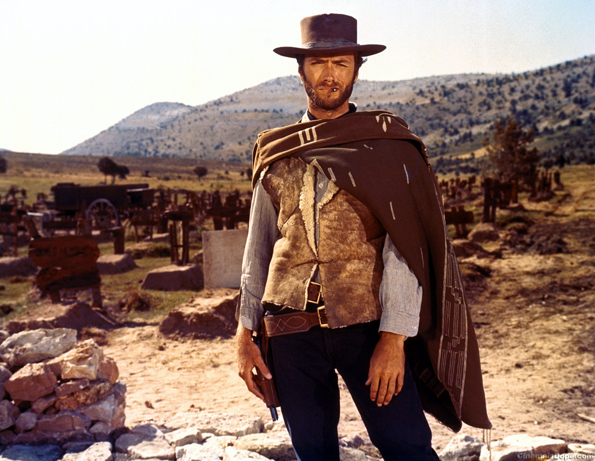

name: landing layout: true class: center, middle, light, landing --- #CalCARE ###Software Engineering 2 Course Project "Meteocal" <br><br> ####February 26, 2015 ###Andrea Grazioso<br>Germano Gabbianelli<br>Fabrizio Ferrai <br> <button class="btn btn-primary btn-lg go-next">Signup »</button> --- name: sign layout: true .sign[***CalCARE***] .course-right[Andrea Grazioso, Germano Gabbianelli, Fabrizio Ferrai] --- name: light layout: true class: center, middle, light --- template: sign layout: true --- name:projdev .title[##Project Development: Timeline] -- .text[###***Nov 16, 2014*** - Requirements Analysis and Specification Document: use cases, functional and non-functional requirements] -- .text[###***Dec 7, 2014*** - Design Document: persistent data design, technologic choices, general architecture] -- .text[###***Jan 25, 2015*** - Implementation: code, Installation Manual, Testing Cases] -- .text[###***Feb 8, 2015*** - Acceptance Testing] -- .text[###***Feb 10, 2015*** - Project Reporting] --- name:numbers .title[##Some numbers first...] -- .text[###Line count here] -- .text[###CoCoMo here] --- name:what .title[##What is CalCARE?] -- .text[###**CalCARE** is a new weather based online calendar] -- .text[###for helping people scheduling their personal events] -- .text[###avoiding bad weather conditions in case of outdoor activities.] --- template:light layout:false ##The Requirements --- name:implemented .title[##Required Features (1)] -- .text[###Functional requirements of the system were divided in 4 macro-areas:] <br> -- .text[###**Event Management**] -- .text[####add a new event] -- .text[####edit an existing event] -- .text[####delete an existing event] -- .text[####make an event «Public» or «Private»] -- .text[####specify details for an event: description, time, location] -- .text[####invite other users of the service to events] -- .text[####accept other users invitations for their own events] -- .text[####automatic enrichment with weather information for every creation or edit of an event, and every 12 hours] --- name:implemented2 .title[##Required Features (2)] -- .text[###**User profile management**] -- .text[####registration] -- .text[####login] -- .text[####logout] -- .text[###**Calendar Management**] -- .text[####modify privacy setting of the calendar (it can be public or private)] -- .text[####import calendar] -- .text[####export calendar] -- .text[###**Notifications Management**] -- .text[####automatic notification (with subsequent proposal for a new sunny day, if available) if an outdoor event turns to have bad weather three days before its happening] -- .text[####email notifications for bad weather] --- name:additional .title[##Additional Features we implemented] -- .text[###**Advanced User profile management**] -- .text[####password reset] -- .text[####email confirmation with token for the registration (more on this later)] -- .text[####modify personal data] -- .text[###**Modern UI: HTML5+CSS3**] -- .text[####Responsive] -- .text[####(...Mobile application?)] --- name:assumptions .title[##Assumptions] -- .text[###We do not explicitly handle event overlapping. Anyway, the UX clearly displays the number of events in a day.] -- .text[###In the definition of "bad weather" is included every weather type different than sunny or cloudy weather.] --- template:light layout:false ##The Design --- name:design1 .title[##Design Pt.1: Data persistence] -- <img src="img/dbmodel.svg" alt="dbmodel" style="width: 110%; position:relative; left: 8em;"> --- name:design2 .title[##Design Pt.2: Architecture] -- .text[###We chose to implement a client-server architecture.] -- .text[###Through REST API endpoints. Advantages:] -- .text[####the frontend is totally decoupled from the backend, except for the data format] -- .text[####so, Separation of Concerns -> Modularity.] -- .text[####and probably less code, so less development time.] --- name:design3 .title[##Design Pt.3: UX] --  --- template:light layout:false ##A closer look to The Code --- name:tools .title[##Technology: Tools] -- <br><br> .text[###] -- .text[###] -- .text[###] --- name:tiers .title[##Technology: Tiers Architecture] --  --- name:jwt .title[##Code Focus: JWT auth & Security] -- .text[###jwt explanation here] --- name:recovery .title[##Code Focus: Password recovery] -- .text[###pr explanation here] --- name:angular .title[##Code Focus: AngularJS] <div style="position:relative; top: -1em; left: 3em;">.title[###The Good, the Bad and the Ugly]</div>  -- .text[###angularjs opinions here] --- template:light layout:false ##DEMO! --- template:light layout:false ##Acceptance testing --- name:jwt .title[##Acceptance Testing] -- .text[###describe our testing here] --- template:light layout:false ##Questions! --- template:light layout:false ##Thank you :)